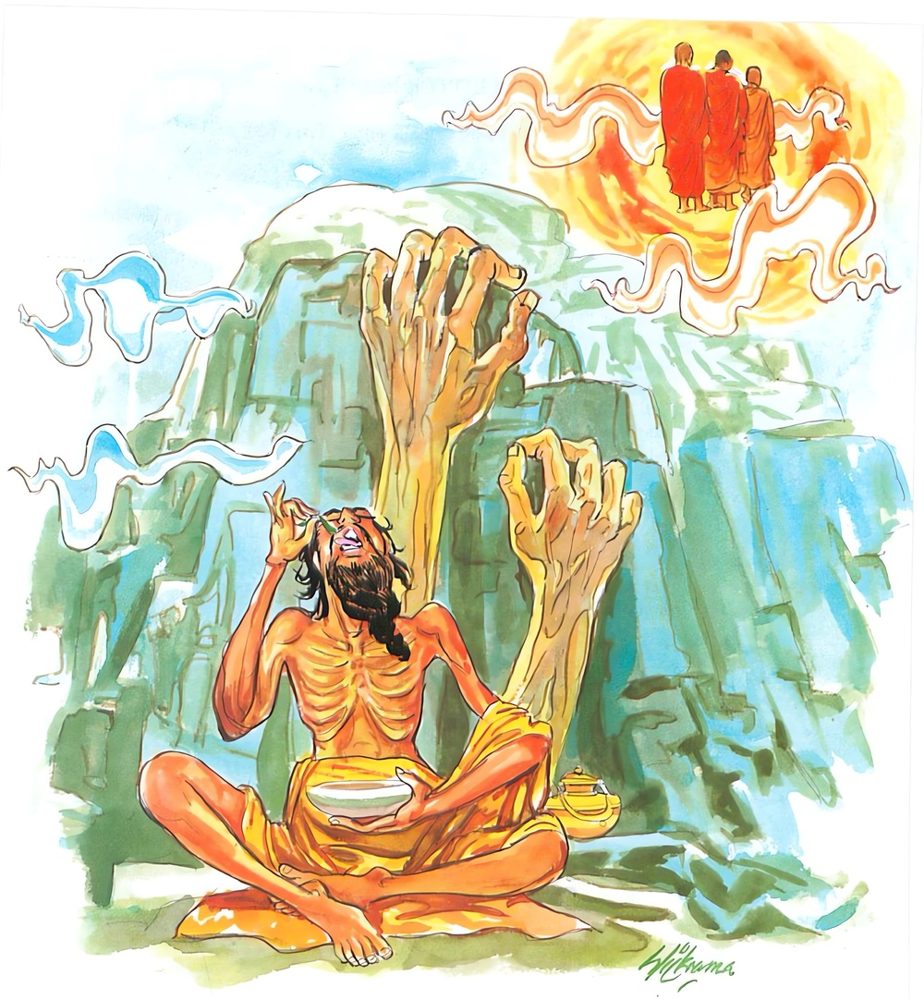

5-11 එකොළොස් වන ජම්බුකාජීවකයාගේ වස්තුවයි.
මෙම කතාව සද්ධර්ම සාගරයෙන් ද කියවන්න.
මාසෙ මාසෙ කුසග්ගෙන බාලො භුඤ්ජෙථ භොජනං
න සො සඞ්ඛතධම්මානං කලං අග්ඝති සොළසිං.
අඥාන පුද්ගල තෙම මසක් පාසා තණ අගින් ගෙණ බොජුන් අනුභව කරන්නේ ද, හෙ තෙම චතුරාර්ය්යසත්යයන් පිරිසිඳ ක්ෂීණාස්රවයන්ගේ සොළොස් වන කලාව පමණට දු නො අගී.

මාසෙ මාසෙ කුසග්ගෙන යන මේ ධර්මදේශනාව ශාස්තෘන්වහන්සේ වේළුවනාරාමයෙහි වාසය කරන කාලයේ ජම්බුක නම් ආජීවකයා අරභයා දේශනා කළසේක. අතීතයෙහි කාශ්යප බුදුන්ගේ කාලයෙහි ගම්වැසි එක් කෙළෙඹියෙක් එක් තෙරනමකට විහාරයක් කොටදී එහි නවත්වා සිවුපසයෙන් උපස්ථාන කෙළේය. තෙරණුවෝ නිරතුරු ඔහුගේ ගෙදර වළඳති. පසුව එක් රහත් භික්ෂූන්වහන්සේනමක් දවල් පිඬුපිණිස හැසිරෙමින් ඔහුගේ ගෙදොරට පැමිණියෝය. කෙළෙඹියා උන්වහන්සේ දැක ඉරියව් ගැන පැහැදී ගෙදරට කැඳවා ප්රණීත භෝජනයෙන් සකස්කොට වළඳවා, ස්වාමීනි, මේ සළුව පඬුපොවා පෙරවාගනු මැනවයි වටිනා සළුවක් දී, ස්වාමීනි, ඔබවහන්සේගේ කෙස් දිගවැඩිය, ඔබේ කෙස්බෑමට කරනවෑමියෙක් ගෙනෙන්නෙමි, ඔබට සැතපීමට ඇඳක්ද ගෙනෙන්නෙමියි කීවේය.
නිබඳව වළඳන කුලුපග භික්ෂුවට රහතන්වහන්සේ කෙරෙහි දක්වන ඒ සත්කාර දැක සිත පහදවාගන්නට නොහැකිවිය. මේ කෙළෙඹියා ඒ වේලාවේ දුටු අයට මෙපමණ සත්කාර කරයි. නිබඳව ගෙදර වළඳන මට සත්කාර නොකරයි යනුවෙන් සිතා විහාරයට ගියේය. රහතන්වහන්සේත් ඒ භික්ෂුව සමගම ගොස් කෙළෙඹියා දුන් සාටකය පඬුපොවා පෙරවූහ. කෙළෙඹියා කරනවෑමියා රැගෙන ගොස් රහත්තෙරුන්ගේ කෙස්බා ඇඳට නංවා ස්වාමීනි, මේ ඇඳෙහිම නිදාගනු මැනවයි කියා තෙරවරුන් දෙනමටම හෙට දිනය සඳහා ආරාධනාකොට ගියේය. නේවාසිකභික්ෂුව අනිත් නමට සත්කාර කරනු ඉවසිය නොහැකිවිය. ඉන්පසු හෙතෙම සවස්කාලයෙහි රහත්තෙරුන් වැදහොත් තැනට ගොස් සතර ආකාරයකින් උන්වහන්සේට බැණවැදුණේය. ඒ මෙසේය. ඇවැත් ආගන්තුකය, ඔබ කෙළෙඹියාගේ ගෙදර බත් කනවාට වඩා අශුචි කෑම ඊට වඩා උතුම්ය. කෙළෙඹියා කැඳවාගෙන ආ කරනවෑමියා ලවා කෙස්බෑමට වඩා තල්ඇටවල පටලවා කෙස් ගළවාදැමීම උතුම්ය. කෙළෙඹියා දුන් සාටකය ඇඳීමට වඩා හෙළුවෙන් විසීම උතුම්ය. කෙළෙඹියා ගෙන ඇඳේ නිදනවාට වඩා බිම වැටී නිදාගැනීම උතුම්ය.
රහත්තෙරණුවෝත්, මේ බාලයා මානිසා නොනැසේවායි ආරාධනය සිහිනොකොට උදෑසනම නැගිට කැමති පරිදි ගියෝය. නේවාසික භික්ෂුවද උදෑසන විහාරයෙහි කළයුතු වතාවත්කොට පිඬුපිණිස හැසිරෙන වේලාවෙහි තවත් මේ ආගන්තුකයා නිදයි. කෙණ්ඩි ශබ්දයෙන්වත් අවදිවනු ඇතැයි යන හැඟීමෙන් නියපිටින් කෙණ්ඩියට ගසා උදෑසනම නැගිට ගමට ගියේය. කෙළෙඹියාත් සත්කාර සූදානම් කොට තෙරුන්වහන්සේලා එනමග බලන්නේ නේවාසිකභික්ෂුව පමණක් දැක ස්වාමීනි, අනිත් තෙරණුවන් කොයිදැයි විචාළේය.
ඉන්පසු නේවාසික භික්ෂුව, ඇවැත්නි, කුමක් කියමුද? ඔබේ කුලුපග භික්ෂුව ඊයේ ඔබ පිටත්වන වේලාවේ ඇඳට නැගී නින්දට වැටී, උදෙන්ම නැගිටි මම අමදින ශබ්දයෙනුත් පැන්බොන සෝදන කළගෙඩි ගැටෙන ශබ්දයෙනුත්, දිය ඉසින ශබ්දයෙනුත් කෙණ්ඩි ශබ්දයෙනුත්, ඇඳෙන් නොනැගිට නිදයි. කෙළෙඹියා මෙසේ සිතීය. එබඳු ඉරියව් සම්පතක් ඇති මගේ ආර්යයන්වහන්සේ මෙතෙක්කල් නොනිදන්නෝය. මා උන්වහන්සේට සත්කාර කරනු දැක ඒකාන්තයෙන් මුන්වහන්සේ විසින් කුමක් හෝ කියනලද්දේ විය හැකිය. හෙතෙම තමන් නුවණැති හෙයින් ඒ භික්ෂුව හොඳින් වළඳවා උන්වහන්සේගේ පාත්රය හොඳින් සෝදා නානාඅග්රරස ඇති භෝජන පුරවා ස්වාමීනි, මගේ ආර්යයන් දැක්කොත් මේ පිණ්ඩපාතය උන්වහන්සේට දෙනු මැනවැයි කීවේය.
අනික් භික්ෂුව පාත්රය අතට ගනිමින්ම ඉදින් ඔහු මේ පිණ්ඩපාතය වැළඳුවොත් මේ තැනදීම අතිලෝභයෙක් වන්නේයයි අතුරුමග පිණ්ඩපාතය දමා තෙරුන් වසන තැනට ගොස් උන්වහන්සේ එහි ඇද්දැයි බලන්නේ නොදැක්කේය. ඔහු මෙවැනි ක්රියාවක් කළහෙයින් අවුරුදු විසිදහසක් කළ මහණදහමද රකිනු නොහැකිවිය. ආයු කෙළවර අවීචිමහා නිරයෙහි ඉපදී එක් බුද්ධාන්තරයක් මහා දුක්විඳ මේ බුද්ධොත්පාදයෙහි රජගහ නුවර එක් බොහෝ කෑමබීම ඇතිකුලයෙක උපන්නේය.
ඔහු පා ඔසවා ඇවිදින කාලයේ පටන් ආසනයක නිදාගැනීමට හෝ බත් කෑමට හෝ නොකැමතිවිය. තම ශරීර මලම කයි. ළාබාලකම නිසා නොදැන කරතියි සලකා ඔහු පෝෂණය කළහ. වැඩිවයසටපත් කල වුවද රෙදි ඇඳීමට ප්රිය නොකරයි. නිරුවතින් සිට බිම නිදයි. තම ශරීරමලම අනුභව කරයි. ඉන්පසු ඔහුගේ මවුපියෝ මොහු කුලගෙයකට නොහොබී. මොහු ගැළපෙන්නේ ආජීවකයන්ට යයි ඔවුන් ළඟට ගෙනගොස් මේ දරුවා පැවිදි කරන්නැයි භාරදුන්හ. ආජීවකයෝ ඔහු පැවිදිකළහ. පැවිදි කරවන විටත් ගෙළ පමණ ගැඹුරු වළක ගිල්වා අංශසන්ධි දෙක ළඟ පුවරුවක් තබා එහි නැගී තල්ඇට කැබලිවලින් කෙස් ගැළවූහ. ඉන්පසු ඒ මවුපියෝ හෙටපිණිස ආරාධනාකොට ගියහ.
දෙවෙනි දින ආජීවකයෝ ඔහුට ගමට යාමට එවයි කීහ. ඔබලා යන්න. මම මෙහිම සිටින්නෙමියි කීය. ඔවුහු නැවත නැවතත් කියා ඔහු නවතා ගමට ගියාහුය. හෙතෙම ඔවුන් ගිය බව දැන වැසිකිළියේ වසා තිබූ පුවරුව ඉවත් කොට එහි බැස දෑතින්ම පිඬු වශයෙන් ගෙන අශුචි කෑවේය. ආජීවකයෝ ඇතුළුගමෙන් ඔහුට ආහාර එවූහ. ඔහු එය ප්රතික්ෂේප කෙළේය. නැවත නැවතත් කීනමුත් මට මේ ආහාරයන් වැඩක් නැත. මට ආහාර ලැබුණේයයි කීය. ආහාර ලැබුණේ කොහෙන්ද? මෙහිදීම ලැබිණි. මෙසේ දෙවෙනි තුන්වෙනි සිව්වෙනි දිනවලත් ඔවුහු බොහෝකොට කීවත් මම මෙහිම සිටිමියි ගමට යෑමට නොකැමති විය.
ආජීවකයෝ, මොහු දිනපතා ගමට යාමටත්, අප එවන ආහාර ගැනීමටත් නොකැමති වෙයි. මෙහිදීම මම ආහාර ලැබුවෙමියිද කියයි. ඔහු කරන්නේ කුමක්දැයි අල්වා ගන්නෙමුයයි ගමට යනකල දෙතුන් දෙනෙක් ඔහු අල්වා ගැනීම සඳහා නවතා සෙස්සෝ ගියහ. ඒ දෙතුන් දෙනා පසුපස්සේ යන්නවුන් මෙන් ගොස් සැඟවුණාහ. හෙතෙමේද ඔවුන් ගියබව දැන පෙර පරිද්දෙන්ම වැසිකිළියට බැස අශුචි කෑවේය. සෙස්සෝ ඔහුගේ ක්රියාව දැක ආජීවකයන්ට ඒ බව දැන්වූහ. ඒ ඇසූ ආජීවකයෝ අහෝ හරිම බරපතල කාර්යයක්, යම්හෙයකින් ශ්රමණගෞතමයන්ගේ ශ්රාවකයෝ මෙය දැනගතහොත් ආජීවකයෝ අශුචි කමින් ඇවිදිතියි අපට අපකීර්තිවන සේ ප්රකාශකරන්නාහුය. මොහු අපට ගැළපෙන්නෙක් නොවේයයි ඔහු නෙරපා හැරියාහුය.
නෙරපා දැමූ ඔහු, මිනිසුන් මල පහකරන ප්රකට එක් ගල්තලාවක ගල්වලක්ද සහිත තැනක් ඇත. එහි ගොස් රාත්රියෙහි අශුචි කා මිනිස්සු ශරීරකෘත්යය සඳහා එනවිට එක් අතකින් ගලේ එල්ලී එක් පයක් ඔසවා අනිත් පයින් දණ ගසා උඩුසුළඟ දෙසට හැරී කටඇරගෙන සිටී. මහාජනයා ඔහු දැක ළඟට පැමිණ වැඳ, ස්වාමීනි, ආර්යයන්වහන්සේ කුමක් නිසා මුඛය විවෘත කොට සිටින්නාහුදැයි අසයි. මම සුළඟ බුදින්නෙමි, මට වෙන අහරක් නැතැයි කියයි. ස්වාමීනි, එක් පාදයකින් දණගසා සිටින්නෙහිද? මම උග්රවූ ඝෝරතපස් කරමි. මා දෙපයින් පෑගුවොත් පොළොව කම්පාවෙයි. එනිසා එක් පයක් ඔසවා අනිත්පයේ දණින් සිටින්නෙමි. මම රෑදාවල් සිටගෙනම සිටින්නෙමි. ඉඳ නොගනිමි. නොනිඳමි.
මිනිස්සු වනාහි වචන මාත්රයෙන්ම යම්යම් දේ විශ්වාස කරන්නාහුය. එහෙයින්, අනේ පුදුමයි. මෙබඳු තපස්වීවරුනම් ඉතා දුලබය. අපි මීට පෙර මෙබඳු අය දැක නැත්තෙමු. මෙයින් අංගමගධවාසීහු කැළඹීගියාහුය. මාස් පතා මහත්වූ සත්කාර ආහාරපාන ගෙන ආහ. හෙතෙම මම වාතය පමණක් අනුභව කරමි. වෙන අහරක් මට නැත. වෙනත් දේ කෑවොත් මගේ තපස නැසෙයි කියමින් ඔවුන් ගෙනා දේ කිසිවක්ම නොපිළිගත්තේය. මිනිස්සු, අනේ ස්වාමීනි, අප නොනසන්න. ඔබ වැනි ඝෝරතපස්වී කෙනෙක් අපේ ආහාර පරිභෝග කළවිට එය අපට දිගුකලක් හිතසුව පිණිස වන්නේයයි නැවත නැවතත් ඉල්ලා සිටියහ. ඔහුට වෙනත් අහරක් රුචිනොවෙයි. මහාජනයාගේ ඉල්ලීම්වලින් බේරෙන්ට නොහැකිව ඔවුන් ගෙන ආ ගිතෙල් පැණි ආදියෙන් කුසතණ අගක් තෙමා දිව අග තියා දැන් ඔබ යන්න, මෙපමණකින් ඔබට බොහෝ පින් ලැබෙන්නේයයි පිටත්කෙළේය.
මෙසේ ඔහු අවුරුදු පනස් පහක් නිරුවතින්ම අශුචි කමින් කෙස් උදුරා දමමින් බිම නිදමින් කාලය ගතකෙළේය. උදෑසන ලොව බැලීම බුදුවරුන් අත්නොහරින සිරිතකි. එහෙයින් එක් දිනක් උදෑසන ලොව බලන භාග්යවතුන්වහන්සේ නුවණදැලට ජම්බුකාජීවකයා හසුවිය. බුදුරජාණන්වහන්සේ මා එහි යෑමෙන් කුමක් වන්නේදැයි සිතාබලා, ඔහු සිව්පිළිසිඹියාසමග රහත්බවට පත්වන බවත්, මම මොහු ආදිකොට ඇති පිරිසට එක් ගාථාවක් කියන්නෙමි, ගාථා කෙළවර අසූසාර දහසක් ප්රාණීන්ට ධර්මාවබෝධය වන්නේය. මේ කුලපුත්ර නිසා මහාජනයා සුවපත් වන්නාහුයයිද දැන, දෙවෙනි දවසේ රජගහනුවර පිඬුපිණිස වැඩමවා පිණ්ඩපාතයෙන් අනතුරුව ආනන්ද හිමියන් අමතා-
ආනන්ද, අපි ජම්බුකාජීවකයා ළඟට යමුදැයි වදාළහ. ආනන්ද හිමියෝ, ස්වාමීනි, ඔබවහන්සේම වඩින්නාහුදැයි ඇසූහ. එසේය මමම යන්නෙමියි වදාරා සවස් වේලාවෙහි ඔහු සිටි තැනට වැඩමවූහ. දෙවිවරු මෙසේ සිතූහ. ශාස්තෘන්වහන්සේ ජම්බුකාජීවකන් සිටින තැනට වැඩමවති. ඔහු පිළිකුල් කටයුතු මලමුතු හා දැහැටි දඬු දැමූ ගල්තලාවෙහි සිටියි. වැසි වැස්විය යුතුයයි තම ආනුභාවයෙන් එකෙණෙහිම වැසි වැස්සවූහ. ගල්තලාව පිරිසිදුව නිර්මල විය. ඉන්පසු ඒ මත පංචවර්ණ මල්වැස්සක් වැස්සවූහ. බුදුරජාණන්වහන්සේ තමන්ම ජම්බුකාජීවකයන් වෙත වැඩමවා ජම්බුකයයි ශබ්දකළහ. ජම්බුක, මේ දුදනා කවුද? ජම්බුකයයි මට කථා කරන්නේ කවුදැයි සිතා මේ කවුදැයි ඇසීය. මම ශ්රමණයෙක්මියි වදාළහ. මහාශ්රමණය කුමක් නිසා ආවෙහිදැයි ඇසීය. අද රෑ මට මෙහි විසීමට තැනක් දෙන්නැයි ඉල්ලූහ. මහාශ්රමණය, මෙහි විසීමට තැනක් නැත. ජම්බුකය, එසේ නොකරව. එය රැයක් විසීමට මට තැනක් දෙව. පැවිද්දෝ පැවිද්දන්ගෙන් උපකාර බලාපොරොත්තු වෙති. සාමාන්ය මිනිස්සු මිනිසුන් හා එක්වීමට බලාපොරොත්තු වෙති. කිම ඔබ පැවිද්දෙක්ද? එසේම පැවිද්දෙක්මි. ඔබ පැවිද්දෙකු නම් ඔබේ ලබුකට්ට කොහිද? දුම්කබල කොහිද? පූනනූල කොහිද? ඒවා තිබේ. වෙනවෙනම ගෙන යෑම කරදර නිසා අභ්යන්තරයෙහිම තබාගෙන යන්නෙමි. ඔබ මේවාත් රැගෙන යන්නෙහිදැයි කිපුණේය. ඉන්පසු බුදුරජාණන්වහන්සේ, ජම්බුක, එය එසේ වේවා, කිපෙන්ට අවශ්ය නැත. මට විසීමට තැනක් කියවයි වදාළහ. මහාශ්රමණය මෙහි විසීමට තැනක් නැත.
බුදුරජාණන්වහන්සේ ඔහු වසන තැන ළඟින්ම ඇති එක් පර්වත ප්රාන්තයක් දැක එය පෙන්වමින් මේ ප්රාන්තයෙහි කවරෙක් වසන්නෙහිදැයි ඇසූහ. මහාශ්රමණය කිසිවෙක් නැත. එසේනම් එය මට දෙව. මහාශ්රමණය, එය ඔබට දැන් ගන්න. ශාස්තෘන්වහන්සේ නිසීදනයක් හදාගෙන හිඳගත්සේක.
ප්රථම යාමයෙහි සතරවරම් දෙව්මහ රජවරු සතරදිශා ආලෝකමත් කරමින් බුදුන්ට උවටැන්කිරීමට පැමිණියහ. මධ්යම යාමයෙහි සක්දෙව්රජ පැමිණියේය. ජම්බුක ඔහු දැක මේ කවුරුන්දැයි සිතීය. අවසාන යාමයෙහි එක් ඇඟිල්ලකින් එක සක්වළක් දෙකකින් දෙකක් දසයකින් සක්වළ දසයක් ආලෝකමත් කළහැකි මහබඹු මුළුව වනයම ඒකාලෝක කරමින් පැමිණියේය.
ජම්බුක, බ්රහ්මයා දැක මේ කවරෙක්දැයි සිතා, උදෑසනම බුදුන් ළඟට ගොස් පිළිසඳර කථාකොට එකත්පසෙක හිඳ බුදුන්ගෙන්, මහාශ්රමණය, ඔබ ළඟට සතරදිසා ආලෝකමත් කරමින් ආවේ කවුරුන්ද? සතරවරම් දෙව්මහරජ දරුවෝය. කුමක් සඳහා ආවාහුද? මට උපස්ථාන කිරීඹය. ඇයි ඔබ සතරවරම් දෙවියන්ටත් වඩා උතුම්ද? එසේය ජම්බුක, මම සතරවරම් දෙව්මහරජදරුවනුත් ඉක්මවා සිටින අතිරාජ කෙනෙක්මි.
මැදුම් යාමෙහි ආවේ කවුද? ශක්රදිව්යරාජයායි. කුමක් සඳහා ආවේද? මට උපස්ථාන සඳහාමයි. කිම ඔබ ශක්රයාටත් වඩා උසස්ද? එසේය. ජම්බුකය මම ශක්රයාටත් වඩා උසස්වෙමි. ඔහු මගේ ගිලානෝපස්ථාන කරන කප්පියකාරක සාමණේර නමකට සමානය. පශ්චිම යාමයෙහි සියලු වනය ඒකාලෝක කරමින් පැමිණියේ කවුද? ලෝකයෙහි බ්රාහ්මණාදීහු පැකිළී වැටී මහාබ්රහ්මයාට නමස්කාර වේවායි යමෙකුට කියත්ද? ඒ මහාබ්රහ්මයා පැමිණියේය. කිම ඔබ මහබඹාටත් වඩා උතුම්ද? එසේය ජම්බුකය, මම මහාබ්රහ්මයා ළඟ අතිබ්රහ්ම වෙමි.
මහාශ්රමණය, ඔබ ආශ්චර්යමත්ය. පස්පනස් වසක් මෙහි වසන මට උපස්ථාන පිණිස මෙයින් එක් කෙනෙකු ආවේ නැත. මම මෙතෙක් කල් වාතය ආහාරකොට ගනිමින් සිටගෙනම කාලය ගත කෙළෙමු. එනමුත් ඒ කිසිවෙක් මට උපස්ථාන සඳහා නොආවාහුය.
ඉන්පසු ශාස්තෘන්වහන්සේ, ජම්බුකය ඔබ මේ ලෝකයෙහි මෝඩ මහාජනයා රවටමින් මාත් වංචාවෙන් රැවටීමට කැමති වන්නෙහිය. ඔබ වසට පනස්පහක් අශුචිම කෑවා නොවේද? පොළොවෙහිම නිදා ගත්තෙහිය. නිරුවතින් ඇවිද්දෙහිය. තල්ඇට කැබලිවලින් හිසකෙස් උදුරා දැමුවෙහිය. එසේ කරමින්, ලෝකයා රවටමින් මම වාතය අනුභව කරමි. තනිපයින් සිටිමි. නොනිදන්නෙමි. හිඳනොගනිමියි කියමින් මාද රවටනු කැමැත්තෙහිය.
පෙරත් ඔබ ලාමක පව්කාර පිළිගැනීම් නිසා මෙතෙක් කල් අශුචි කමින්, බිම නිදමින්, නිරුවතින් හැසිරෙමින්, තල්ඇට කැබලිවලින් හිසකෙස් ගැළවීමට පැමිණියෙහිය. දැනුත් ඒ ලාමක පව්කාර දෘෂ්ටිම පිළිගෙන සිටින්නෙහිය. මහාශ්රමණය, මා විසින් පෙර කුමක් කරන ලද්දේද? ශාස්තෘන්වහන්සේ පෙර ඔහු කළකම් ප්රකාශ කළහ.
බුදුරජාණන්වහන්සේ ඔහුගේ පූර්ව කථාන්තරය කියාගෙන යද්දීම ඔහුට මහා සංවේගයක් ඇතිවිය. විලිලජ්ජා ඇතිවිය. හෙතෙම උක්කුටුකයෙන් හිඳගත්තේය. බුදුරජාණන්වහන්සේ ඔහුට දිය පෙරහන්කඩ දුන්හ. හෙතෙම එයින් විලිවසාගෙන බුදුන් වැඳ එක් පැත්තක හිඳගත්තේය. බුදුහුද ඔහුට පිළිවෙල කථාව කියා දහම් දෙසූහ. හෙතෙම දේශනාවසානයෙහි සිව්පිළිසිඹියා සමග රහත්බවට පැමිණ බුදුන් වැඳ අසුනින් නැගිට පැවිදි උපසම්පදා ඉල්ලා සිටියේය. එතැනින් ඔහුගේ පෙරකළ කම්වල විපාක අවසන්විය.
මෙතෙම වනාහි රහතුන්වහන්සේ නමකට සිව්වැදෑරුම් ආක්රෝශවලින් බැණ වැදී මේ මහ පොළොව තුන් ගව්වකටත් වඩා වැඩෙන කාලාන්තරයක් තිස්සේ අවීචිමහානිරයෙහි පැසී අවසානයෙහි පස්පනස් වසරක් මෙසේ විප්රකාරයට පැමිණියේය. එයින් ඔහු කළ කම්පල අවසන් විය. විසිදහසක් අවුරුද්දක්කරන ලද මහණදම් පිරීමේ ඵලය විනාශකළ නොහැකිවිය. එහෙයින් බුදුරජාණන්වහන්සේ ඔහු දෙසට දකුණත දික්කොට මහණ මෙහි එව, බඹසරෙහි හැසිරෙවයි වදාළහ. එයින්ම ඔහුගේ ගිහිස්වභාවය අතුරුදහන් විය. අටපිරිකර දැරූ සැටවස් පිරුණු මහතෙරනමක් මෙන්විය. මෙය සිදුවූයේ අංග මගධ දෙරටවාසීන් ජම්බුකාජීවකයන්ට පුදසත්කාර ගෙනආ දවසෙහිය. පුදසත්කාර ගෙනආ උභයරටවාසීහු කිම අපේ ආර්යවූ ජම්බුක වඩා උතුම්ද, නැතහොත් ශ්රමණ ගෞතමයන්වහන්සේ වඩා උතුම්දැයි සිතූහ. ඉදින් ශ්රමණ ගෞතමයන් වඩා උතුම් නම් මොහු ශ්රමණ ගෞතමයන් වෙත යන්නේය, ජම්බුකාජීවකයන් වඩා මහත් හෙයින් ගෞතමයෝ මොහු ළඟට ආවාහුදැයි සිතූහ.
ශාස්තෘන්වහන්සේ මහාජනයාගේ කුකුස දැන, ජම්බුකය, ඔබේ උපස්ථායකයන්ගේ සැකය විසඳාලවයි වදාළහ. ස්වාමීනි, මමත් එයම බලාපොරොත්තුවෙන් සිටියෙමියි කියා චතුර්ථධ්යානයට සමවැදී නැගිට තල්ගසක් පමණ අහසට පැනනැගී, ස්වාමීනි, භාග්යවතුන්වහන්සේ මාගේ ශාස්තෘවරයාය. මම උන්වහන්සේ ශ්රාවකයා වෙමියි කියා අහසින් බැස වැඳ නැවත තල්ගස් දෙකක් තුනක් වශයෙන් තල්ගස් හතක් පමණ අහසට නැගී බැස තමන් බුදුන්ගේ ශ්රාවකභාවය දන්වා සිටියේය. ඒ දුටු මහාජනයා, අහෝ බුදුවරු නම් ආශ්චර්යමත්හුය. පමණ නැති ගුණ ඇත්තෝයයි සිතූහ. බුදුරජාණන්වහන්සේ මහාජනයා සමග කථා කරමින් මෙසේ වදාළහ.
මෙතෙම මෙතෙක් කල් තොප ගෙන ආ පූජා සත්කාර තණඅගින් දිවඅග තබා තපස්වරණය පුරන්නෙමියි මෙහි ඉවතට දැමීය. ඉතින් මේ ආකාරයෙන් අවුරුදු සියයක් තපස්වරණය පිරුවත් යම්තාක් ස්වල්ප ප්රමාණයක බතක් හෝ කුකුසින් සැක කොට නොබුදින නිසා භත්තච්ඡේදන කුසලචේතනාව අනුව කරන තපස්චරණයෙන් සොළසකින් කොටසක් හෝ නොවටණේයයි පූර්වාපර සන්ධි ගළපා දහම්දෙසමින් මේ ගාථාවද වදාළසේක:
කුසතණ අගින් ගෙන
කුහක ලෙස බත් වළඳන
තවුසා නියම රහතුන් මැද
පිරිහෙයි උතුම් ගුණවලින්
නොවටින බවට පත්වේ
එහි අර්ථය නම්, යම් හෙයකින් බාලො දහම් කිසිවක්ම නොදන්නා සීලාදි ගුණයෙන් වෙන්ව තීර්ථායතනවල පැවිදිව තපස්වරණ පුරන්නෙමියි මාසෙ මාසෙ මසක් පාසා කුසග්ගෙන භොජනං කුසතණ අගින් තෙමා බොජුන් ගනිමින් වර්ෂ සියයක් හෝ කුහක ලෙස භූංජෙථ භොජනං, න සො සංඛත ධම්මානං කලං අග්ඝති සොළසිංති යන සංඛතධර්ම නම් දැනගත් දහම්ය. තුලනය කරනලද, පරීක්ෂා කරනලද දහම්ය. එයින් යටත්පිරිසෙයින් සෝවාන්වීමද, උඩත් පිරිසෙයින් රහත්වීමද වේ. මේ සංඛතධර්මවලින් ඒ බාලයා සොළොස් කලාවෙන් එකක් පමණවත් වටින්නේ නොවෙයි. මෙය පුද්ගලයන් අරමුණු කොට කළ දේශනාවකි. එහි තේරුම නම් එසේ තාපසචරණය පුරන්නාවූ ඔහුට වර්ෂ සියයක් ඉක්ම ගියත් ඒ කුශලචේතනාසංඛත ධර්ම හෝ කාලය හෝ සලකා බත්වුවද කුකුස් ඇතිව නොබුදින්නාවූ එක් බත් වේලක් හෝ කඩකරන කුසල චේතනාව පවතීද, එසේ කලක් පවතින චේතනා කලාවෙන් සොළොස් කොටසකින් එකක් පමණ හෝ නොඅගී. මෙය මෙසේද කියා ඇත. යම්බඳු වූ සංඛත ධර්මයන්ගේ කුසල චේතනා ඵලයක් වෙයිද, එය කොටස් සොළොසකට බෙදා ඉන්පසු ඒ කොටස් නැවත එකක් එකක් සොළොස් සොළොස් කොටස්වලට බෙදා එයිනුත් එක්කොටසක යම් ඵලයක් වෙයිද, එයද ඒ බාලයාගේ තපස්චරණයට වඩා මහත්වේ යනු අර්ථයි.
දේශනා කෙළවර අසූසාරදහසක් ප්රාණීන්ට ධර්මාවබෝධය විය.